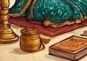
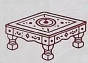
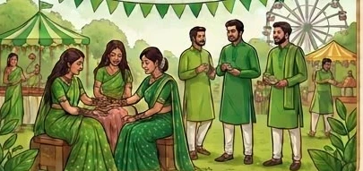
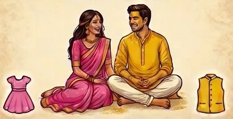
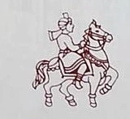
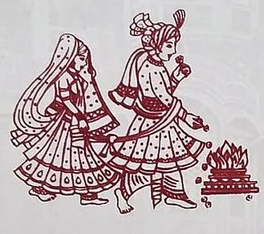

Together with our families
Rudra & Shikha
Thursday, 28 January 2027 · Dahod, Gujarat
With Lord Ganesha’s blessings
You’re invited
With divine blessings and the love of our elders, our families joyfully invite you to celebrate the wedding of
Rudra Desai
&
Shikha Kadakia
We look forward to celebrating with you in Dahod.
25–28 January 2027 · All times in IST
The celebrations
Choose a date, then tap an event for its details and directions.

Lal Ladvo10:00 AM – 2:00 PM IST
The festivities begin with a traditional sweets celebration. Join us as the families gather to mark the start of the wedding celebrations.
Kalyan Society, Dahod · Find venue on Google Maps ↗
Paath / Bhajan4:00 PM – 9:00 PM ISTBandhni prints
An evening of devotional readings and songs with family and loved ones.
Attire Dress in rich Bandhni prints and patterns.
Kalyan Society, Dahod · Find venue on Google Maps ↗

Ganesh Sthapana9:00 AM – 10:00 AM IST
A prayer to Lord Ganesha to bless the wedding and the celebrations ahead.
Kalyan Society, Dahod · Find venue on Google Maps ↗

Mehendi Carnival10:00 AM – 4:00 PM ISTShades of green
Come for traditional henna, music, dancing, and games.
Attire Wear any shade of green, from soft sage to deep emerald.
Sanskar Kendra, Dahod · Find venue on Google Maps ↗
Sangeet & Garba7:00 PM onwards ISTChaniya choli · Traditional wear
An evening of family performances, music, Garba dancing, and a festive meal.
Attire Wear a chaniya choli or other traditional attire.
Sanskar Kendra, Dahod · Find venue on Google Maps ↗
Gruhshanti9:00 AM – 2:00 PM ISTSilk sarees
A traditional prayer and sacred fire ceremony for peace and harmony in the couple’s home.
Attire The attire theme is handwoven silk sarees.
Kalyan Society, Dahod · Find venue on Google Maps ↗
Reception7:00 PM onwards IST
Spend the evening with the families as they welcome guests and celebrate with the couple.
Sanskar Kendra, Dahod · Find venue on Google Maps ↗

Pithi9:00 AM – 1:00 PM ISTPink & yellow
A joyful morning when family and friends apply turmeric paste and offer their blessings.
Attire Women wear pink and men wear yellow.
Kalyan Society, Dahod · Find venue on Google Maps ↗
Vevhai Jaman1:00 PM – 3:00 PM ISTBride-side reception
The bride’s family welcomes you to celebrate with the couple at the bride-side reception at Sanskar Kendra.
Sanskar Kendra, Dahod · Find venue on Google Maps ↗

Varyatra & Wedding7:00 PM onwards IST
Join the groom’s wedding procession and stay for the wedding celebrations at Gujaratiwad Wadi.
Gujaratiwad Wadi, Dahod · Find venue on Google Maps ↗
The schedule reflects the family’s latest timings.
Thursday, 28 January 2027
The wedding

Varyatra & Wedding
7:00 PM onwards IST
Gujaratiwad Wadi, Dahod
Join the groom’s procession, then gather with both families for the wedding ceremony. Rudra and Shikha will take their sacred steps around the fire and receive blessings as they begin their married life together.
Find Gujaratiwad Wadi on Google Maps ↗